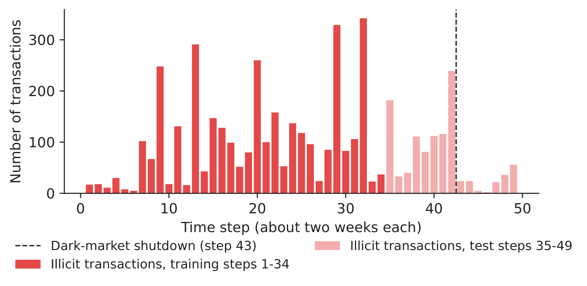
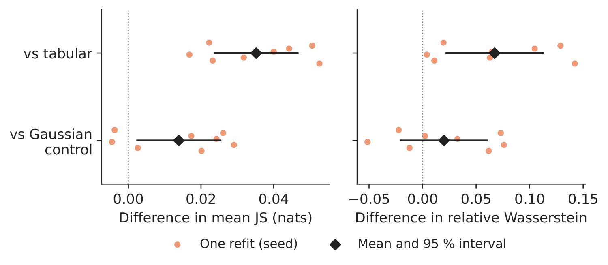
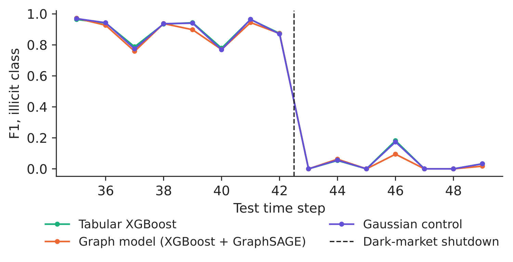
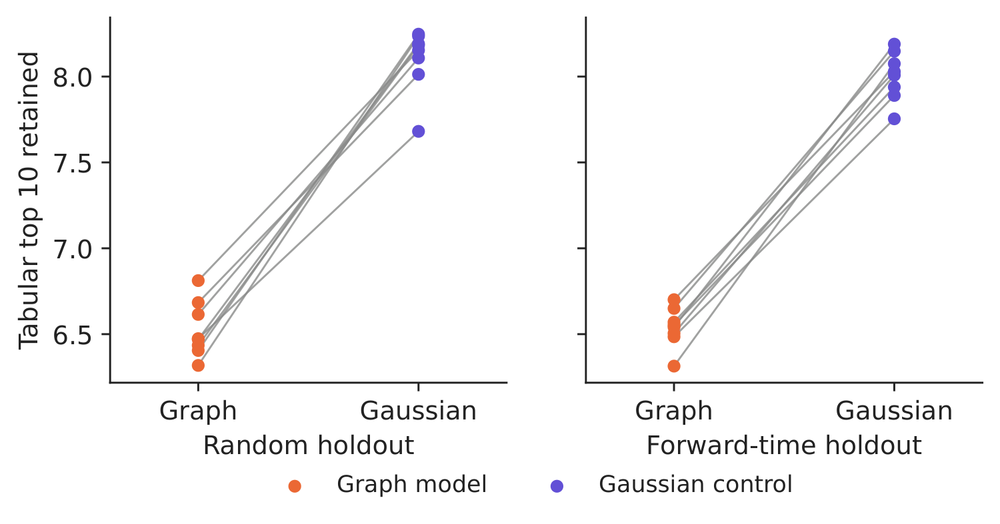

Case study 3 · Lecture 9
Stability of explanations in graph-based anti-money-laundering models
Prof. dr. Daniel Traian PELE
Bucharest University of Economic Studies, Department of Statistics and Econometrics
Romanian Academy, Institute for Economic Forecasting
The paper
Diaconu, D. & Pele, D. T. (2026). SHAP stability across random and forward-time validation in graph-augmented fraud detection. submitted to Expert Systems with Applications. code: github.com/QuantLet/GNN_XAI_Stability
Materials
The business question
The anti-money-laundering (AML) unit of a crypto-asset exchange screens Bitcoin transactions with a gradient-boosted tree model. Every alert reaches an investigator together with its “top reasons”, the features with the largest SHAP (SHapley Additive exPlanations) contributions. The data-science team proposes to add features learnt from the transaction graph by a graph neural network (GNN). The head of compliance must answer the model-risk committee: if we add the graph and retrain the model on new data, will the reasons shown to investigators stay the same? And how do we monitor them after each update, so that a change in the explanation is noticed before it confuses a case review?
The reference paper
Question. When a fraud model moves from random to forward-time validation, do the SHAP contributions of the original transaction fields change more if the model also uses features learnt from a payment graph, and is the difference due to the graph or simply to adding more columns (Sections 1 and 3.1)?
Data. The IEEE-CIS (Institute of Electrical and Electronics Engineers, Computational Intelligence Society) fraud data: 590,540 card transactions over about six months, fraud rate 3.50 %, 486 tabular features; payments are linked through four entity fields (address, device type, e-mail domain, device identity). Random split: 30 % stratified holdout; forward-time split: payments after the 70th percentile of time; 20 refits (Sections 3.2, 4.1–4.3).
Method. The same XGBoost (eXtreme Gradient Boosting) classifier is trained on three input sets: the transaction fields alone (tabular model), the fields plus the 64-dimensional first-layer embedding of a two-layer GraphSAGE (graph sample and aggregate) network (graph model), and the fields plus 64 Gaussian columns drawn with the covariance of the training embeddings (Gaussian control). Interventional TreeSHAP explains the same 5,000 held-out payments; stability is measured by the Jensen–Shannon (JS) divergence and the Wasserstein distance between the SHAP distributions of each original field under the two validation schemes, and by the overlap of the leading fields for the same payment (Sections 3.3–3.7).
Main findings of the paper.
- Switching from random to forward-time validation changed the SHAP distributions of the original fields slightly more in the graph model than in the Gaussian control: paired JS difference +0.00534 nats, 95 % interval [+0.00204, +0.00864], in 15 of 20 refits; against the tabular model the difference was \(-\)0.00356 and its interval included zero (Table 1, Section 5.1).
- For the same later payment, the graph model retained 6.53 of the tabular model's ten leading fields, the Gaussian control 7.33; the leading field changed for 44.2 % of payments with graph features and 31.1 % with Gaussian ones (Section 5.2).
- The 64 graph features took 42.0 % of the total absolute SHAP mass, the Gaussian ones 18.8 %; the original fields shrank (median scale ratio 0.612). On the raw SHAP scale the graph model moved less in every refit; relative to each field's own contribution it moved more in 19 of 20 (+0.0451); on a common scale it moved less (\(-\)0.4833) (Section 5.3, Table 3).
- On later payments the tabular model had an AUC (area under the receiver operating characteristic curve) of 0.9099, the graph model 0.9042 and the Gaussian control 0.9105; training the graph on an earlier period than the tree narrowed the gap (Sections 5.4–5.6). Table 7 turns these measures into a monitoring guide for a validation team; for these data the authors would retain the tabular model (Section 6.1).
Related work of our group: the multi-level XAI (explainable artificial intelligence) framework on IEEE-CIS that combines SHAP with node and edge ablation (Diaconu & Pele, 2026, Proceedings of the International Conference on Business Excellence (PICBE) 20(1), 118–132, doi:10.2478/picbe-2026-0015; Case 1). The Elliptic data used below come from Weber et al. (2019), arXiv:1908.02591.
The method
Intuition behind the method
SHAP shares the score of a transaction among its inputs. Add 64 new columns and they take part of the credit: the old fields get smaller contributions and, measured in raw units, they also move less — they look “more stable” only because they are smaller. A fair test therefore compares the graph model with a control that adds the same number of columns with the same covariance but no graph information, and refits everything several times, because a single fit hides how much explanations vary from one training run to the next.
Graph embedding. A GraphSAGE layer updates transaction \(v\) from its own features and the mean of its neighbours': \(\mathbf z_v=\mathrm{ReLU}\big(\mathbf W_1\mathbf x_v+\mathbf W_2\,\tfrac{1}{|\mathcal N(v)|}\sum_{u\in\mathcal N(v)}\mathbf x_u+\mathbf b\big)\), where \(\mathbf x_v\) are the standardised features, \(\mathcal N(v)\) the transactions linked to \(v\) by a payment flow, \(\mathbf W_1,\mathbf W_2,\mathbf b\) learnt weights and ReLU the rectified linear unit. The network is trained with class-weighted cross-entropy on the training labels only and then frozen; the 64 coordinates \(\mathbf z_v\) of its first layer are appended to \(\mathbf x_v\). Gaussian control. \(\mathbf g_v=\mathbf L\mathbf u_v\), with \(\mathbf u_v\sim N(\mathbf 0,\mathbf I_{64})\) and \(\mathbf L\mathbf L^\top=\hat{\boldsymbol\Sigma}_z+10^{-6}\mathbf I\), the Cholesky factor of the training covariance of the embeddings: same dimension and covariance, no information about the graph. SHAP. The tree score is split as \(f(\mathbf x_i)=\phi_0+\sum_j\phi_{ij}\), where \(\phi_{ij}\) is the Shapley value of feature \(j\) for transaction \(i\) (its average marginal contribution over all orders of adding the features) and \(\phi_0\) the mean score of a background sample of 100 training rows. Stability across validation schemes. For model \(m\), refit \(s\) and original feature \(k\), let \(P_b,Q_b\) be the shares of the random- and forward-time SHAP values in bin \(b\) (50 quantile bins) and \(M_b=(P_b+Q_b)/2\): \(J_{msk}=\tfrac12\sum_b P_b\log\frac{P_b}{M_b}+\tfrac12\sum_b Q_b\log\frac{Q_b}{M_b}\) (in nats), and the paired difference \(\Delta_s(C)=\tfrac1p\sum_{k=1}^{p}(J_{Gsk}-J_{Csk})\) compares the graph model \(G\) with a comparator \(C\) over the \(p\) shared features. The Wasserstein distance pairs the sorted values, \(W_{mk}=\tfrac1n\sum_{i}|\phi^{R}_{mk(i)}-\phi^{T}_{mk(i)}|\), and is read on three scales: raw, relative to the field's own mean absolute contribution \(a_{mk}\) (\(W_{mk}/a_{mk}\)) and relative to a common scale \(c_k=(a_{Gk}+a_{Bk})/2\). Same transaction. \(O(m,B)=\tfrac1n\sum_i|T_{mi}\cap T_{Bi}|/10\), with \(T_{mi}\) the ten features with the largest \(|\phi_{ij}|\) for transaction \(i\) under model \(m\) and \(B\) the tabular model. Each paired difference is averaged over \(S\) refits with the interval \(\bar\Delta\pm t_{0.975,S-1}\,s_\Delta/\sqrt S\).
In practice
Compare a new model's explanations with a control that has the same number of added columns; report stability on the scale your users read (raw score units for score monitoring, relative units for small fields, the displayed reasons for investigators); and always refit several times before calling a difference real.
Replication on the course data
Notebook C3_notebook_EN.ipynb: the Elliptic Bitcoin transaction graph (Weber et al., 2019), 203,769 transactions, 234,355 payment flows, 49 time steps of about two weeks, 165 features; 46,564 transactions are labelled (4,545 illicit, 42,019 licit).
Forward-time split: training on steps 1–34 (29,894 labelled transactions, 11.6 % illicit), test on steps 35–49 (16,670, 6.5 % illicit); the random split holds out the same number of transactions, stratified by class.
In each of 8 refits, the seed changes the random split, the GraphSAGE initialisation and the Gaussian draws; SHAP explains 1,000 held-out transactions per scheme (the same 1,000 later transactions in every forward-time fit).
Classroom implementation: Elliptic instead of IEEE-CIS, a transaction-to-transaction graph instead of payments linked through entities, 400 trees of depth 6 instead of 1,000 of depth 10, 8 refits instead of 20.

Figure 1. Illicit transactions per time step; the test period starts at step 35.
Source: Elliptic data set (Weber et al., 2019).

Figure 2. Paired differences, graph model minus comparator; one dot per refit.
Source: our computation; 8 refits.
Table 1. How much do the SHAP distributions of the 165 original features move between random and forward-time validation? Graph model minus comparator.
| Paired difference (mean over refits) | Ours | 95 % interval | Positive runs | Paper (IEEE-CIS) |
|---|---|---|---|---|
| JS divergence, graph – Gaussian control | +0.0139 | [+0.0025; +0.0254] | 6/8 | +0.00534 |
| JS divergence, graph – tabular | +0.0352 | [+0.0238; +0.0466] | 8/8 | \(-\)0.00356 |
| Wasserstein, raw SHAP units, graph – tabular | \(-\)0.0129 | [\(-\)0.0154; \(-\)0.0104] | 0/8 | \(-\)0.00215 |
| Wasserstein, own scale, graph – tabular | +0.067 | [+0.022; +0.112] | 8/8 | +0.0451 |
| Wasserstein, own scale, graph – Gaussian | +0.020 | [\(-\)0.020; +0.060] | 5/8 | +0.0374 |
| Wasserstein, common scale, graph – tabular | \(-\)0.450 | [\(-\)0.513; \(-\)0.387] | 0/8 | \(-\)0.4833 |
Source: our computation on Elliptic (8 refits; positive = the graph model moves more); paper: IEEE-CIS, 20 refits (Tables 1 and 3).
What our data show. On Elliptic the pattern of the paper reappears, more strongly. Moving from random to forward-time validation changes the SHAP distributions of the original features more in the graph model than in the Gaussian control (paired JS difference 0.0139 nats, 95 % interval [0.0025; 0.0254], positive in 6 of 8 refits) and, here, also more than in the tabular model (0.0352 nats). The SHAP mass shows why: the 64 graph coordinates take 55.8 % of the total absolute SHAP values, the 64 Gaussian ones only 10.1 %; the sum of the absolute contributions of the original features per transaction falls from 10.00 in the tabular model to 5.90 with the graph (9.62 with the Gaussian control), a median scale ratio of 0.517. Because the original features shrink, the graph model moves less on the raw SHAP scale (\(-\)0.0129, positive in 0 of 8 refits) and on a common scale (\(-\)0.450), but more when each feature's movement is measured relative to its own usual contribution (0.067, positive in 8 of 8) — the reversal described in Section 5.3 of the paper. Which model is “more stable” depends on the scale, as the paper shows.

Figure 3. How many of the tabular model's ten leading features stay in the top ten for the same transaction?
Source: our computation; lines join the two models of one refit.

Figure 4. F1 of the illicit class per test time step (mean of the refits).
Source: our computation; alert if the illicit probability exceeds 0.5.
Table 2. Detection quality on the test period, before and after the dark-market shutdown (mean of 8 refits; illicit class, threshold 0.5).
| Model, test period | AUC | PR-AUC | Precision | Recall | F1 |
|---|---|---|---|---|---|
| Tabular XGBoost, steps 35–42 | 0.974 | 0.921 | 0.967 | 0.856 | 0.908 |
| Tabular XGBoost, steps 43–49 | 0.715 | 0.046 | 0.083 | 0.018 | 0.029 |
| Graph model (XGBoost + GraphSAGE), steps 35–42 | 0.970 | 0.916 | 0.982 | 0.832 | 0.901 |
| Graph model (XGBoost + GraphSAGE), steps 43–49 | 0.665 | 0.039 | 0.114 | 0.011 | 0.020 |
| Gaussian control, steps 35–42 | 0.973 | 0.920 | 0.966 | 0.854 | 0.906 |
| Gaussian control, steps 43–49 | 0.700 | 0.043 | 0.088 | 0.018 | 0.030 |
Source: our computation. PR-AUC = area under the precision–recall curve.
One transaction at a time. On the same later transactions, the graph model keeps 6.54 of the tabular model's ten leading features (Gaussian control: 8.00; paper: 6.53 and 7.33) and 1.84 of the top three (2.45). Detection does not improve: on steps 35–49 the AUC difference, graph minus tabular, is \(-\)0.0137 (95 % interval [\(-\)0.0176; \(-\)0.0098]). Before the dark-market shutdown all three models find most illicit transactions (tabular recall 0.856, F1 0.908); from step 43 recall falls to 0.018 (graph model: 0.011). The explanations can still be computed, but they describe a pattern that no longer finds the illicit transactions — explanation monitoring does not replace performance monitoring. Decision number. With the graph model, the leading reason shown to an investigator changes for 53.7 % of later transactions, against 20.1 % for a model with the same number of uninformative columns (paper: 44.2 % and 31.1 %): a gap of 33.6 percentage points. These are the cases a validation team should sample and reopen before switching models (Table 7 of the paper).
Discussion questions for managers
- Your data scientists show that the raw SHAP values of the old fields move less after adding the graph. What question do you ask before accepting that the new model is “more stable”?
- An investigator sees a different leading reason for the same alert after a model update. Who should be informed, and what should be recorded in the case file?
- Which of the measures in this case (JS divergence, Wasserstein on three scales, top-ten overlap, change of the leading field) would you put on the monthly model-risk dashboard, and with which alarm level?
- After step 43 the illicit transactions change their pattern and recall collapses for all models. Is an explanation still useful when the model no longer detects the fraud it explains?
- The graph model must “earn its place” (Section 6.1 of the paper). What evidence — better detection on later data, or better case reviews — would you require before replacing a working model?
Limitations of the classroom replication
(i) Elliptic is a different network from IEEE-CIS: transactions are linked directly by payment flows, its 165 features are anonymised and already include neighbourhood aggregates, so part of the graph information is present in the tabular model too. (ii) We use 8 refits, 400 trees of depth 6 and 1,000 explained transactions per scheme, fewer than in the paper, so our intervals are wider. (iii) In the random split, the GraphSAGE messages use the features (not the labels) of held-out transactions; the forward-time graph is built from steps 1–34 only. (iv) The comparison describes one cut-off (step 34) and one data set; the dark-market shutdown after step 43 is a strong shift specific to this period.
Summary of case 3
- QuestionIf we add graph features and retrain, do the reasons shown to investigators stay the same?
- DataElliptic Bitcoin graph: 46,564 labelled transactions, 49 time steps; train steps 1–34, test 35–49.
- MethodXGBoost on features, + GraphSAGE embedding, + Gaussian control; SHAP; JS, Wasserstein, top-\(k\); 8 refits.
- ResultGraph block takes 55.8 % of SHAP; leading reason changes for 53.7 % of cases (control 20.1 %); stability depends on the scale.
- DecisionMonitor against a matched control, on the scale users read; require better detection before replacing a working model.

Source: our XGBoost refits on the Elliptic data; tabular top-ten features retained for the same transactions.
Abbreviations
| AML | anti-money laundering |
|---|---|
| AUC | area under the ROC curve, ROC = receiver operating characteristic |
| GNN | graph neural network |
| GraphSAGE | graph sample and aggregate |
| IEEE-CIS | Institute of Electrical and Electronics Engineers, Computational Intelligence Society |
| JS | Jensen–Shannon |
| PICBE | Proceedings of the International Conference on Business Excellence |
| PR-AUC | area under the precision–recall curve |
| ReLU | rectified linear unit |
| ROC | receiver operating characteristic |
| SHAP | SHapley Additive exPlanations |
| TreeSHAP | SHAP for tree ensembles |
| XAI | explainable artificial intelligence |
The text, numbers, charts and tables of this page are those of the case brief; every number is computed by the case notebook on the course data.